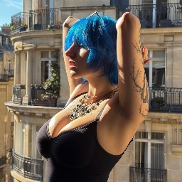
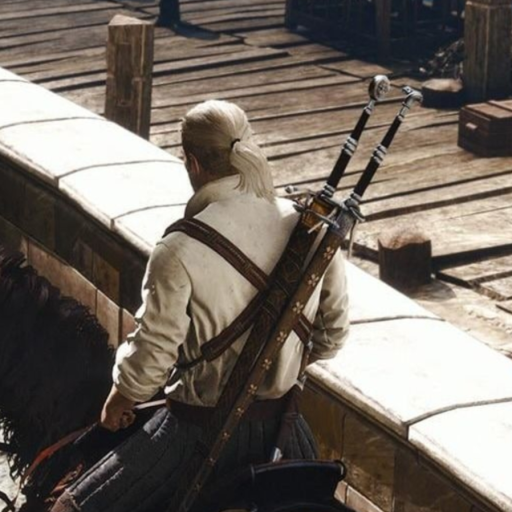
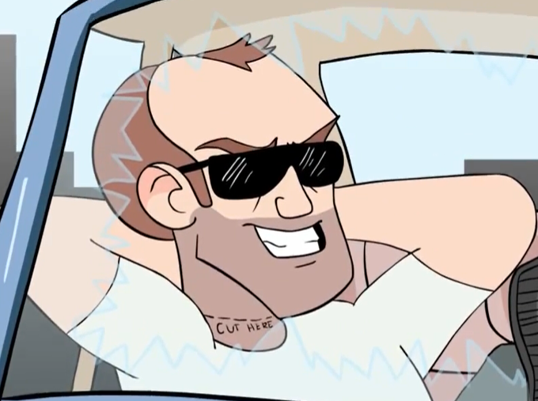
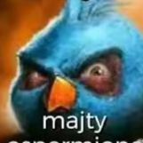

GŁÓWNY INICJATOR · ADMINISTRACJA
Marcel
Twórca wizji Miasta RP i główny inicjator projektu. Czuwa nad kierunkiem rozwoju serwera oraz wspólnie ze społecznością buduje kolejne rozdziały miasta.
DISCORDmarcel_4556
MIASTO RP — LUDZIE PROJEKTU
Poznaj zespół, który tworzy, rozwija i dba o Miasto RP każdego dnia.
GŁÓWNY INICJATOR PROJEKTU

GŁÓWNY INICJATOR · ADMINISTRACJA
Twórca wizji Miasta RP i główny inicjator projektu. Czuwa nad kierunkiem rozwoju serwera oraz wspólnie ze społecznością buduje kolejne rozdziały miasta.
ZESPÓŁ ADMINISTRACJI

ADMINISTRATOR
Dba o porządek, pomoc dla graczy i płynne działanie codziennego życia miasta.

ADMINISTRATOR
Wspiera rozwój projektu, społeczność oraz wydarzenia tworzone dla mieszkańców.

BUDOWNICZY
Projektuje i tworzy miejsca, które nadają Miastu RP charakter — od ważnych przestrzeni po detale budujące klimat rozgrywki.